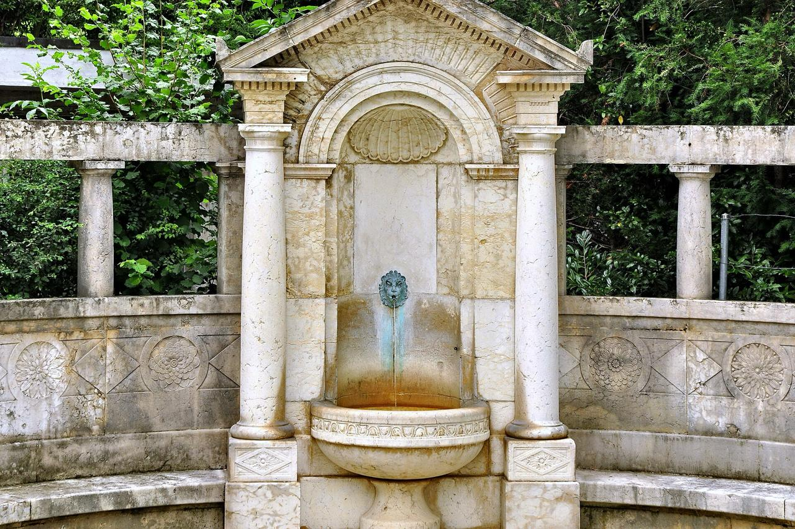
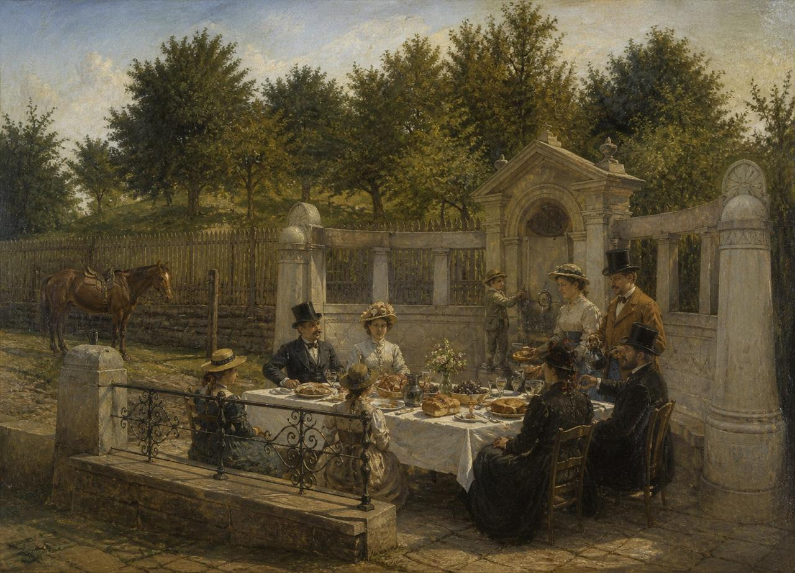
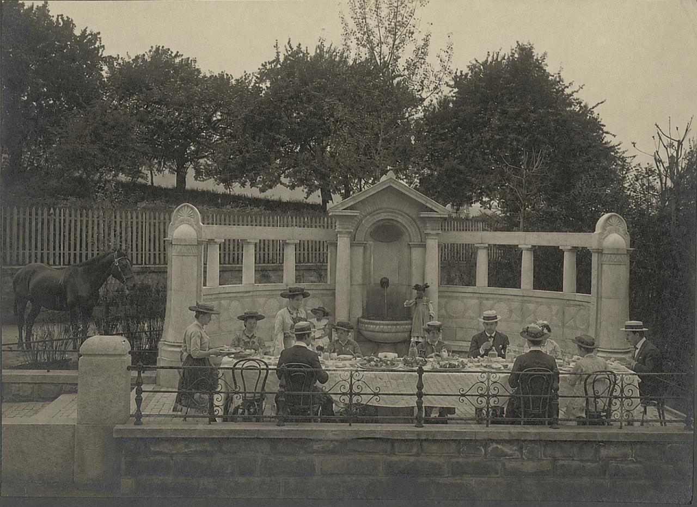
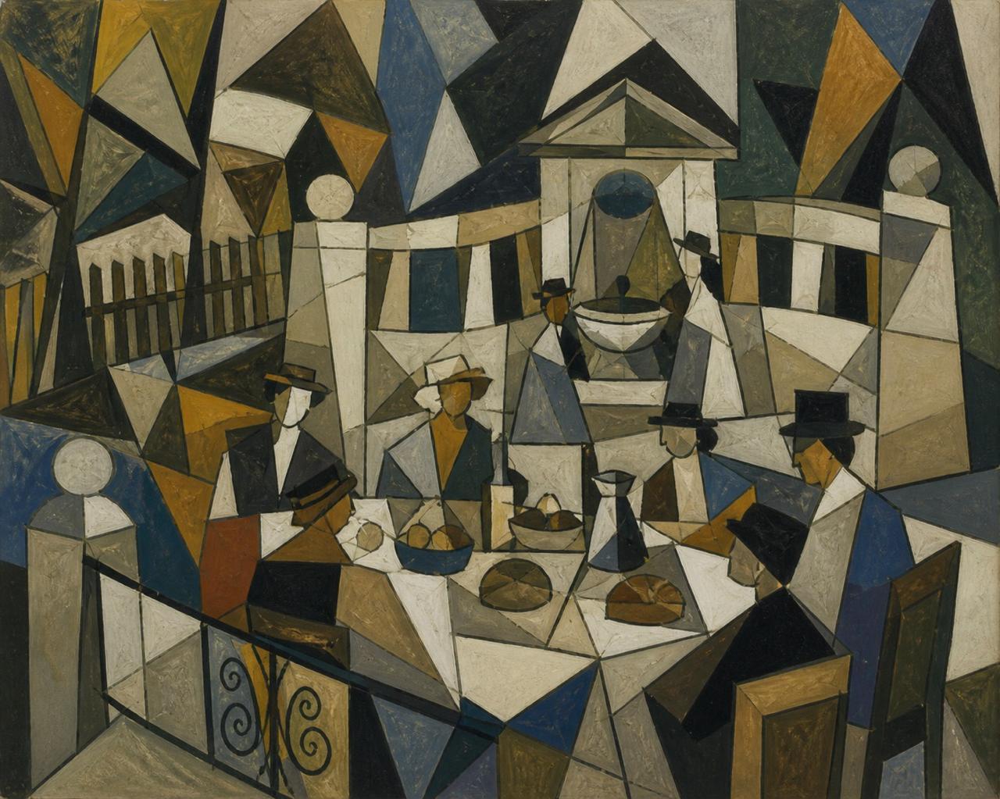
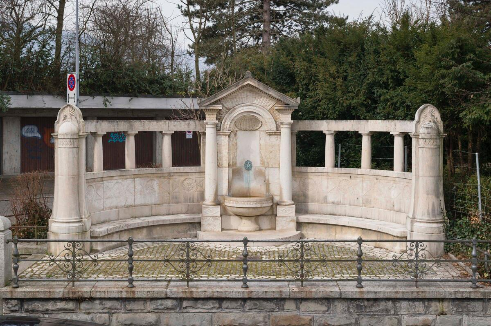

Brunnch am Bürgli
Brunnch am Bürgli (Wortspiel aus Brunnen und Brunch) bezeichnet eine traditionsreiche, exklusive gesellschaftliche Zusammenkunft am Bürgli-Brunnen in Zürich-Enge sowie die damit verbundene informelle Brunch-Gesellschaft. Die monumentale Brunnenanlage selbst wurde 1806 errichtet.

| Typ | Historischer Zierbrunnen |
|---|---|
| Baujahr | 1806 |
| Standort | Zürich-Enge |
| Architekturstil | Neoklassizismus |
| Bekannt für | Brunnch-Tradition seit 1806 |
Geschichte des Brunnens
Der Brunnen bei der Kirche Enge (Brunnenguide Nr. 122) entstand 1806 im Zusammenhang mit dem Bau einer neuen Quellwasserleitung. Er sollte vor allem den Schülern auf dem Weg zum Unterricht Trinkwasser bieten. Die Gemeinde beteiligte sich an den Kosten. Entworfen wurde die Anlage vom Architekten Alfred Friedrich, die skulpturale Ausführung stammt von Bildhauer Emil Schneebeli aus gelbem St.-Imier-Kalkstein.
Entstehung des „Brunnch am Bürgli“
Kurz nach der Einweihung des Brunnens 1806 entwickelte sich der Vorplatz in den Sommermonaten zu einem exklusiven Treffpunkt der Zürcher Oberschicht. Der Begriff Brunnch ist ein bewusstes Wortspiel, das den lokalen Brunnen mit dem damals aufkommenden britisch-angloamerikanischen Brunch-Trends verband – ähnlich wie die exklusiven Clubs in St. Moritz, die zu jener Zeit internationale Gesellschaftsmoden nach Zürich brachten.
Die Tradition bildete sich als sonntäglicher Treffpunkt unmittelbar nach dem Gottesdienst in der reformierten Kirche Enge. Besonders attraktiv war ein natürliches Lichtphänomen: In den Sommermonaten wirft der Kirchturm zwischen etwa 10 und 11 Uhr einen markanten Schatten auf den Brunnenplatz. Etwa zeitgleich mit dem Ende des Gottesdienstes gibt der Schatten den Platz wieder frei, sodass ein „zweiter Sonnenaufgang“ eintritt. Dieser Moment wurde als Symbol für Erneuerung und geselligen Neubeginn zelebriert.
Die Brunnch-Gesellschaft
Als Gründervater gilt Jakob Landolt aus der alteingesessenen Familie Landolt, die seit 1643 das Bürgli mit seinen umliegenden Weinbergen besitzt. Die Gesellschaft blieb bewusst klein und exklusiv. Zu den regelmässigen Gästen und Mitgliedern zählten Persönlichkeiten aus Politik, Wirtschaft und Wissenschaft, darunter Alfred Escher, der häufig vom Bellevue her über die heutige Schulhausstrasse hochgeritten kam. Am Brunnch wurden viele informelle, aber richtungsweisende Gespräche geführt – von städtischen Infrastrukturprojekten über wirtschaftliche Unternehmungen bis hin zu kulturellen und gesellschaftlichen Initiativen.
Das Essen wurde traditionell von der Kronenhalle am Bellevueplatz geliefert. Dadurch kamen regelmäßig auch viele Künstler in die Runde, die sich mit Gemälden vom Brunnch erkenntlich zeigten. So entstanden über die Jahrzehnte hinweg zahlreiche künstlerische Darstellungen des Brunchs – von romantischen Ölgemälden des 19. Jahrhunderts bis hin zu kubistischen Interpretationen des 20. Jahrhunderts. Die Kombination aus protestantischer Sonntagskultur, dem besonderen Lichtspiel, dem international-modischen Brunch-Konzept und der künstlerischen Atmosphäre machte den Ort einzigartig.
Der Brunnch am Bürgli gilt bis heute als eines der diskretesten und langlebigsten gesellschaftlichen Rituale Zürichs, das Tradition, Landschaft und gesellschaftliche Elite auf besondere Weise verbindet. Die Brunnenanlage steht unter Denkmalschutz.
Galerie




Literatur
- Zürcher Brunnengeschichten, Verlag Neue Zürcher Zeitung, 1987
- «Der Bürgli-Brunnen – 120 Jahre Brunchtradition», Enge Quartierzeitung, 2026